Understanding Einstein's Notation and einsum Multiplication
Perform higher-order tensor operations with string notation.
January 31, 2025 · einsum multiplication
Introduction
Machine Learning relies heavily on linear algebra operations, in particular, it is critical to understand well how multiplications between matrices (or more precisely between tensors) work.
I have frequently noticed that those approaching the study of Machine Learning frameworks such as PyTorch or Tensorflow have many problems when bumping into errors concerning size mismatch between tensors. In this short article, I would like to shed some clarity on this and introduce the use of einsum.
From scalars to tensors
In Machine Learning, we differentiate the data according to its dimension (dim). It is common to work with:
- Scalars dim = 0
- Vectors dim = 1
- Matrices dim = 2
- Tensors dim = 3 ( or more)
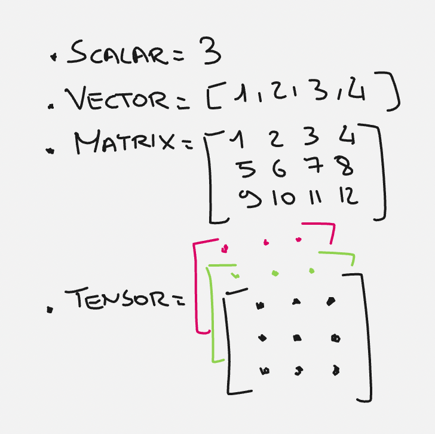
In PyTorch we can very easily create these data types.
import torch
# Create a scalar tensor
scalar = torch.tensor(5.0)
# Print the scalar
print("Scalar:", scalar.item())# Create a vector tensor
vector = torch.tensor([1.0, 2.0, 3.0, 4.0])
# Print the vector
print("Vector:", vector)# Create a matrix tensor
matrix = torch.tensor([[1.0, 2.0], [3.0, 4.0]])
# Print the matrix
print("Matrix:\
", matrix)# Create a 3D tensor
tensor_3d = torch.tensor([[[1.0, 2.0], [3.0, 4.0]], [[5.0, 6.0], [7.0, 8.0]]])
# Print the 3D tensor
print("3D Tensor:\
", tensor_3d)# Create a 4D tensor
tensor_4d = torch.tensor([[[[1.0, 2.0], [3.0, 4.0]], [[5.0, 6.0], [7.0, 8.0]]]])
# Print the 4D tensor
print("4D Tensor:\
", tensor_4d)⚠ Beware that when we discuss vectors, math books emphasize a lot the difference between row vectors and column vectors. A vector that is either a row or column has only one dimension d. For example, a row or column vector of dimension d = 4 will be represented in the following way.
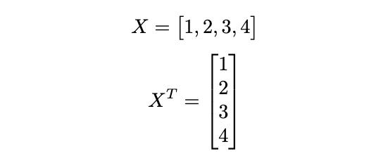
In coding frameworks, however, vectors are represented in two dimensions. A row vector will have a dimension (1,d) and a column vector dimension (d,1), which is quite different from having a single dimension d.
This often leads to errors at broadcasting time. Broadcasting is an automatic operation performed by libraries such as Numpy and PyTorch to try to match the size of two tensors and perform an algelbrical operation.
For example, if you try in PyTorch to perform a sum between an array of dimension (4,1) and one of dimension (1,4) you will see that the result counterintuitively will have dimension (4,4).
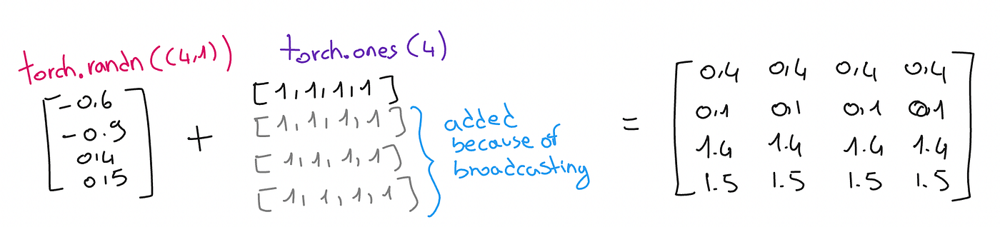
x = torch.randn((4,1))
xy = torch.ones((4,))
yprint((x+y).shape)
print((x+y))For more information about broadcasting, I suggest you read the next article.
Broadcasting in pytorchUnderstanding the broadcasting process in tensorsmedium.commedium.comSlice Tensors
Let us consider tensors of 3 dimensions. Such a tensor we can represent with the following notation: X ~ (a,b,c)
Thus a tensor of the type X ~ (2,3,2) stands for the fact that we have two matrices of size 3x2.
In fact, the first number indicates the number of batches, the second the number of rows, and the third the number of columns.
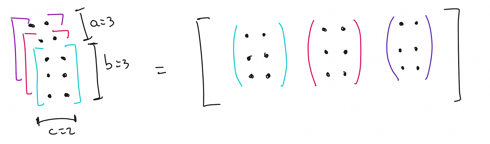
We can now use subscripts to select a subset of the tensor. For example, to identify a single scalar we can use X_122, which indicates the 1st matrix, 2nd row and 2nd column.
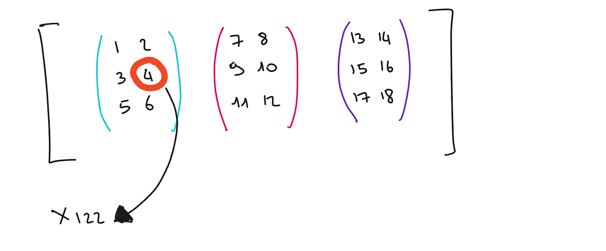
Let’s take another example. With a tensor of size X ~ (a,b,c) = (2,3,2), we can use a single subscript to indicate a slice (b,c), which means an entire matrix.
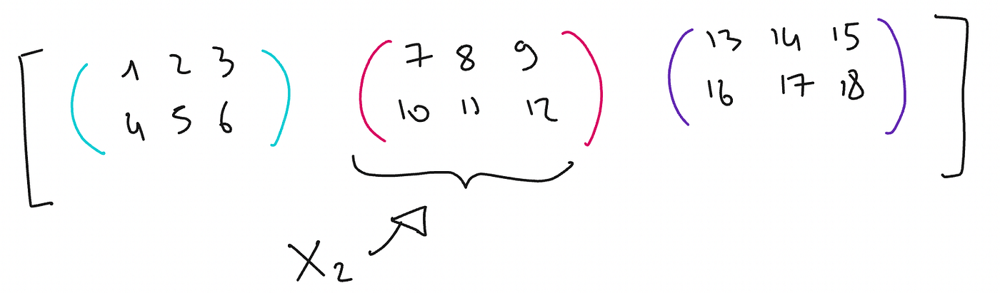
We can use more complex notation to denote a subset of a slice.
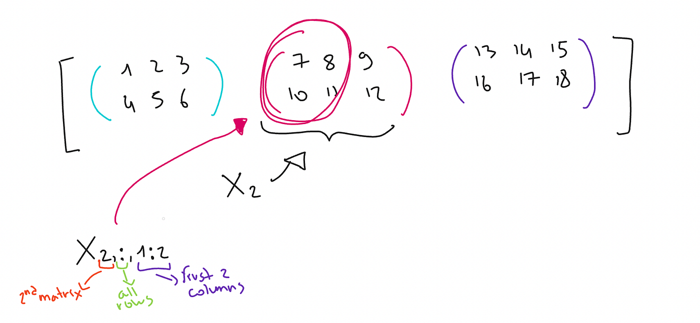
Higher order operations
I assume here that you know how to do a simple matrix product. The following animation clearly summarizes this operation.
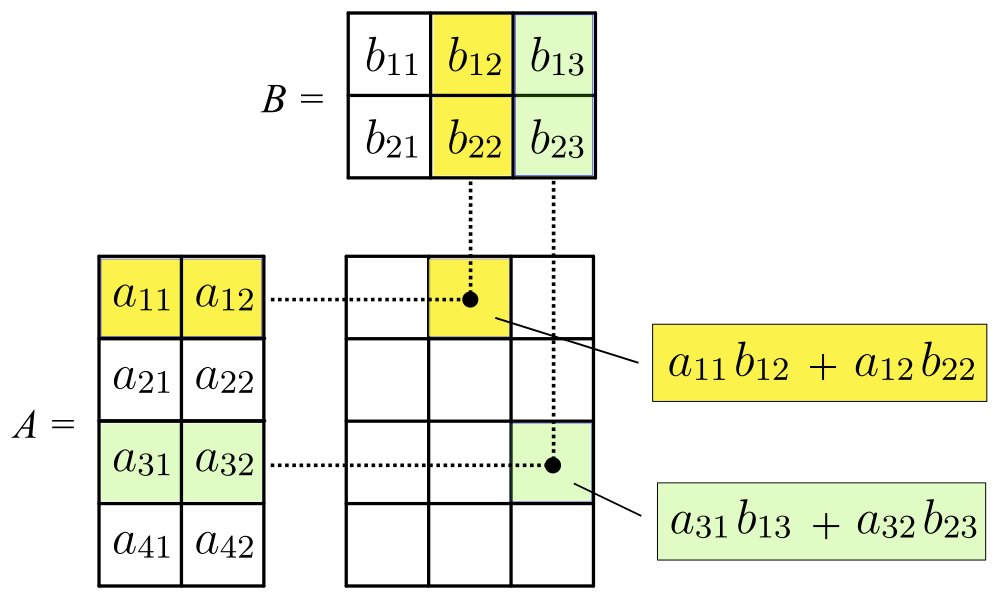
The simple matrix product can be generalized to multiple batches (when we work with tensors). Most frameworks such as PyTorch for example support Batched Matrix Multiplication (BMM).
If we have 2 matrices X ~ (n,a,b) and Y~ (n,b,c)
thenwe compute the BMM as [BMM(X,Y)]_i = X_i*Y_i ~ (n,a,c)
Visually it means multiplying the corresponding matrices of each batch.
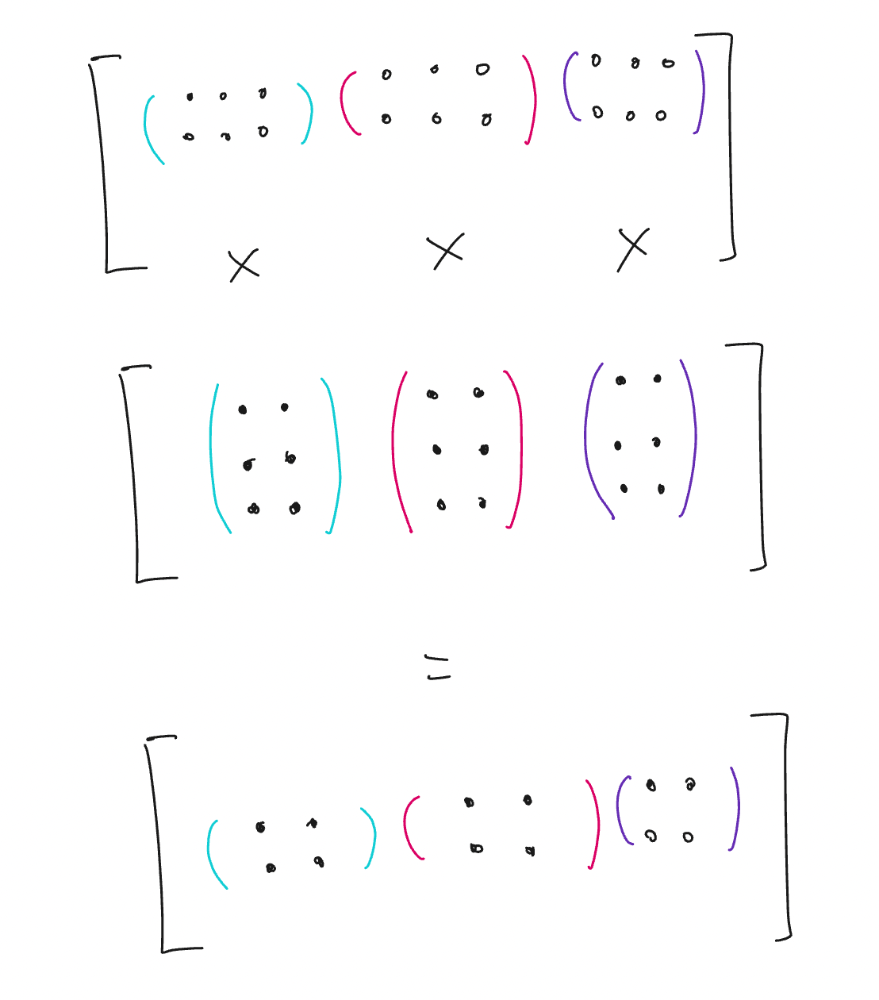
Einstein’s notation and einsum
Einsum is a string-based notation for specifying operations between tensors in Machine Learning frameworks.
Let us take the BMM formula and rewrite it in the form of a summation.
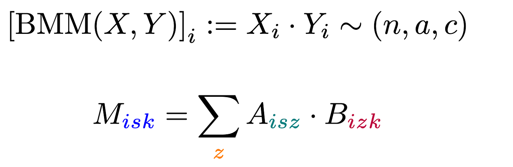
How It Works:
- Batch Dimension. For each batch i, you perform matrix multiplication.
2. Matrix Multiplication. For each element M_ijk in the resulting tensor M:
- A_ijz refers to an element in the i-th batch, j-th row, and z-th column of A.
- B_izk refers to an element in the i-th batch, z-th row, and k-th column of B.
3. Summation.
- Multiply corresponding elements A_ijz and B_izk for all z (which spans the shared dimension of A and B).
- Sum these products to get the value of M_ijk
Einstein’s notation tries to simplify the notation by making the assumption that any index appearing on the right but not on the left is summed over.
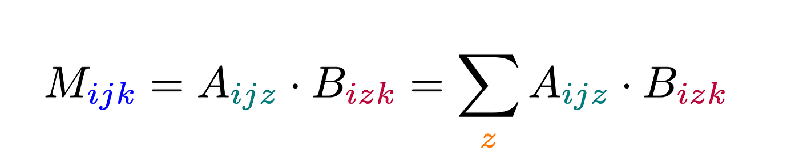
So we can take the subscripts in the reverse order and use them in our string notation in the einsum.
“ijz,izk->ijk” and the framework will understand how you want to compute your multiplication and summation.
Working with the transposed axes becomes simple, it only takes to switch axes in the einsum definition : “ijz,ikz->ijk”
The actual PyTorch code to perform this is
torch.einsum("ijz,izk->ijk",x,y)Which should return the same result as the simple dot product
x@yThe advantage of using this notation is that we do not need to remember how the API framework works, or how broadcasting can affect our multiplication because by specifying the input and output shape in the einsum the framework will be smart enough to understand what we want to do.
More resources to learn about einsum:
Tim RocktäschelTim Rocktäschel, 30/04/2018 - updated 02/05/2018 When talking to colleagues I realized that not everyone knows about…rockt.github.iorockt.github.io Understanding NumPy's einsumHow does np.einsum work? Given arrays A and B, their matrix multiplication followed by transpose is computed using (A @…stackoverflow.comstackoverflow.com
Understanding NumPy's einsumHow does np.einsum work? Given arrays A and B, their matrix multiplication followed by transpose is computed using (A @…stackoverflow.comstackoverflow.com
Final Thoughts
In this article, we have seen how to use scalars, vectors, matrices, and tensors. In particular, we focused on tensors that are well suited to a massive parallel implementation, such as using GPUs or more specialized hardware (e.g. TPUs, IPUs).
Very often those who approach the world of machine learning immediately encounter an initial obstacle in understanding the notation that can at first glance be very complex, especially in the study of neural networks. I hope this article has brought some clarity and made you better understand the use and potential of einsum which is often used in codebases in the implementations of Deep Learning model architectures such as modern LLMs.
Follow me on Medium if you like this article! 😁
💼 Linkedin ️| 🐦 X (Twitter) | 💻 Website
This article has been published on Towards Data Science